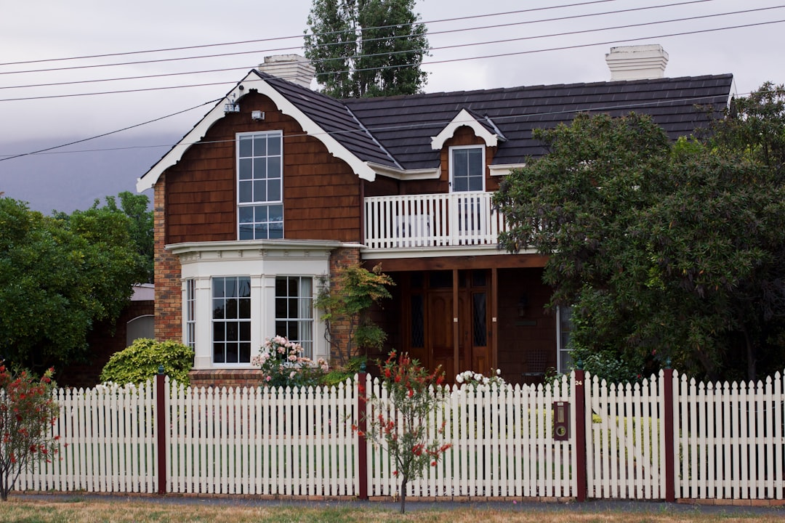

For North Brisbane households dealing with a jammed, noisy or uneven garage door, the practical path is to start with diagnosis before deciding on repair or replacement. The source business covers 15 northside suburbs, uses a 3 step enquiry process, and confirms the fault, written scope and price range before work is approved. Its published service list covers springs, openers, rollers, tracks, cables, panels, servicing and replacement, with qualified electricians used where electrical work is required.
For homeowners comparing garage door repairs north brisbane options, the useful first step is to match the symptoms, door type and urgency to the kind of visit that is actually needed. See Garage Door Repairs North Brisbane for the current service details.
Garage Door Repairs North Brisbane Explained
If you begin with symptoms instead of assuming the whole setup is finished, the next decision is usually clearer. Garage Door Repairs North Brisbane describes a repair first process that checks the fault before replacement is suggested. That matters because a snapped spring, a motor that runs without moving the door, and a curtain that has slipped out of its side guides do not point to the same answer.
The source page asks households to send the fault, suburb and urgency so the team can plan the right repair response. That is a practical filter because it gives the site enough detail to sort an urgent access problem from a maintenance issue or an upgrade enquiry.
- Jammed, stuck open or unsafe doors are treated as urgent where security and access matter.
- Heavy lifting, sudden loss of balance or motor strain can sit in the spring system rather than the motor alone.
- Noisy travel, leaning panels or rough movement can point to rollers, hinges, tracks or overdue servicing.
When repair is the stronger first option
The published service list supports a straightforward way to think about repair work. A repair first visit makes more sense when the door is still broadly suitable for the property and the fault appears concentrated in one area, such as springs, opener response, rollers, tracks, cables, remotes or sensors. The source page also includes panel and dent work with balance checks afterwards, which is useful when impact damage has affected how the door travels.
Replacement is described more narrowly. It is presented for situations where an old door is no longer worth repeated repairs, or where a manual door is being upgraded to automatic operation. That distinction helps owners separate a fixable fault from a change in the whole setup.
One useful question on site is whether the immediate job is fault restoration or a broader upgrade decision. If those two paths are separated clearly in the written scope, it is easier to compare what must be done now against what is optional.
What a useful quote should spell out
One of the stronger details on the source page is the written quoting step. After the visit is arranged, the team confirms the door type and fault on site, then provides a written scope and price range before work is approved. That gives the owner a clear pause point before parts or replacement work begin.
For a household on the northside, the most helpful questions are specific and plain. Ask what fault has been confirmed, which part of the system it affects, whether the problem changes the balance of the door, and whether the quote covers diagnosis only or approved repair work as well. If the issue sits in the opener or related wiring, the page states that qualified electricians are used where electrical work is required.
- Confirm the door type if you know it, such as roller, sectional, automatic or electric.
- Ask whether the written scope covers only the visible fault or also nearby worn parts found on site.
- Check whether the job is restoring operation, reducing repeat breakdown risk, or moving you toward replacement.
Who this guide is most useful for
This guide is most useful when the fault affects access, security or daily reliability, not just appearance. The source page names coverage from Kedron, Chermside and Wavell Heights through to Bald Hills, Bracken Ridge and Bridgeman Downs, and its examples are practical ones: a garage left exposed, a vehicle trapped inside before work or school, a reversing opener, or an older setup that has become noisy and sticky with heavy daily use.
It is also useful when the same symptom can have more than one cause. A door catching mid travel could involve the track, hinges or balance. A remote that only works from close range may sit with the controls rather than the entire opener. A door that drops on one side can point to cable or drum issues. The value in those distinctions is simple, you avoid treating every fault like a full replacement case.
For broader household budgeting, ASIC Moneysmart publishes consumer money guidance that can help when you are weighing immediate repair work against larger home spending decisions.
- Describe the symptom clearly. Submit the fault, suburb and urgency so the team can plan the right repair response before the visit.
- Confirm the door type. If you know whether the door is roller, sectional, automatic or electric, include it with the enquiry.
- Use the on site check properly. Ask for the confirmed fault, written scope and price range before approving parts or replacement work.
| Decision point | Repair first is more likely | Replacement is more likely |
|---|---|---|
| Door condition | Fault appears limited to springs, opener parts, rollers, tracks, cables, remotes, sensors or a damaged panel | The old door is no longer worth repeated repairs |
| Operating style | The current setup still suits the household | You want to upgrade a manual door to automatic operation |
| Quote stage | You want the confirmed fault and written scope first | You already prefer a full new door outcome if the scope supports it |
Common questions
When is a garage door problem urgent? The source page treats jammed, stuck open or unsafe doors as urgent where security and access matter. Its examples include a garage left exposed and a vehicle trapped inside before work or school.
Does every fault mean the whole door should be replaced? No. The published approach is repair first, and the service list covers springs, openers, rollers, tracks, remotes, sensors, cables, panels and servicing before replacement is treated as the default answer.
What should I have ready before booking? Have the fault symptoms, suburb, urgency and door type ready if you know it. The source page says those details help the team plan the right repair response and arrange a suitable repair visit.
This guide covers how to compare fault types, quoting steps and repair versus replacement decisions for a North Brisbane garage door problem.